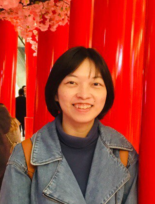
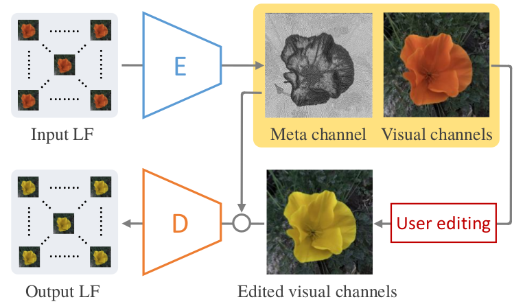
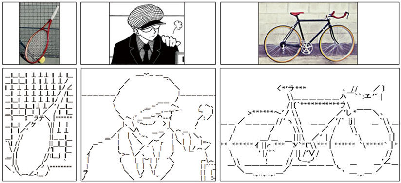
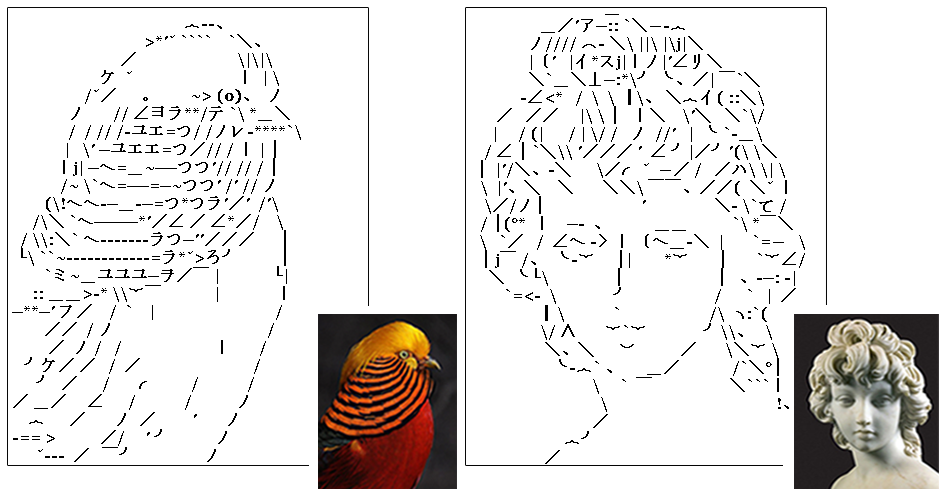

Minshan Xie谢敏珊Ph.D. Candidate (since Fall 2018)
Department of Computer Science and Engineering, |
 |


Biography
She is a Ph.D. candidate in Department of Computer Science and Engineering, The Chinese University of Hong Kong (CUHK), supervised by Prof. WONG, Tien-Tsin.
Before that she received the B. Eng. degree in Software Engineering from South China University of Technology (SCUT) in 2015. She obtained the M.Phil. degree in Computer Science and Technology from the same university in 2018 under the supervision of Prof. XU, Xuemiao.
Her research interests cover Computer Graphics, Computer Vision and Deep Learning. Specifically, she is interested in facilitating manga production with deep learning technology.
News!!!
[Mar. 2021]
One paper conditionally accepted to SIGGRAPH 2021.
[Mar. 2021]
One paper conditionally accepted to CVPR 2021.
[Aug. 2020]
One paper conditionally accepted to SIGGRAPH Asia 2020.
[Mar. 2019]
One paper accepted to TVCG.
[Aug. 2018]
She started her Ph.D study at CUHK.
Publications [Google Scholar]

|
Seamless Manga Inpainting with Semantics Awareness
Minshan Xie, Menghan Xia, Xueting Liu, Chengze Li, Tien-Tsin Wong ACM Transactions on Graphics (ACM TOG), SIGGRAPH, 2021, 40(4), 1-11. [ Project] [ Paper ] [ Code ] |

|
Exploiting Aliasing for Manga Restoration
Minshan Xie*, Menghan Xia*, Tien-Tsin Wong IEEE Conference on Computer Vision and Pattern Recognition (CVPR), pp. 13405-13414. 2021. [ Project] [ Paper ] [ Code ] |
|  |
A Learned Compact and Editable Light Field Representation
Menghan Xia, Jose Echevarria, Minshan Xie, Tien-Tsin Wong Arxiv, 2021 [ Paper] |

|
Manga Filling Style Conversion with Screentone Variational Autoencoder
Minshan Xie*, Chengze Li*, Xueting Liu, Tien-Tsin Wong ACM Transactions on Graphics (ACM TOG), SIGGRAPH Asia, 2020 [ Project] [ Paper] [ Code ] |
|
Perceptual-Aware Sketch Simplification Based on Integrated VGG Layers
Xuemiao Xu, Minshan Xie, Peiqi Miao, Wei Qu, Wenpeng Xiao, Huaidong Zhang, Xueting Liu, Tien-Tsin Wong IEEE transactions on visualization and computer graphics (TVCG), 2019, 27(1), 178-189. [ Paper] |
|  |
ASCII art synthesis from natural photographs
Xuemiao Xu, Linyuan Zhong, Minshan Xie, Xueting Liu, Jing Qin, Tien-Tsin Wong IEEE transactions on visualization and computer graphics (TVCG), 2016, 23(8), 1910-1923. [ Paper] |
|  |
Texture-aware ASCII art synthesis with proportional fonts
Xuemiao Xu, Linyuan Zhong, Minshan Xie, Jing Qin, Yilan Chen, Qiang Jin, Tien-Tsin Wong, Guoqiang Han Proceedings of the workshop on non-photorealistic animation and rendering (NPAR) 2015: 183-193. [ Paper] |